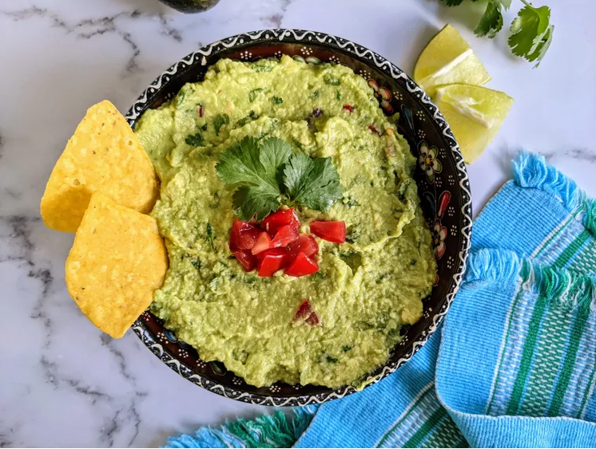

Guacamole
Home

Description
You can never go wrong with this homemade guacamole made with ripe avocados and lime juice gets a tasty kick from cayenne and cilantro.
Guacamole is an avocado-based dip or spread that originated in Mexico.
It's typically made with mashed avocado and lime juice, then seasoned with salt and cilantro.
Guacamole often contains tomatoes and onions.
Ingredients
- Avocados
- Lime
- Salt
- Tomatoes
- Onions
- Cilantro
- Garlic(optional)
- Cayenne Pepper(optional)
Workflow
-
Gather all ingredients
-
Mash avocados, lime juice, and salt together in a medium bowl;
mix in tomatoes, onion, cilantro, and garlic.
-
Stir in cayenne pepper. Serve immediately, or cover and refrigerate for 1 hour for improved flavor.